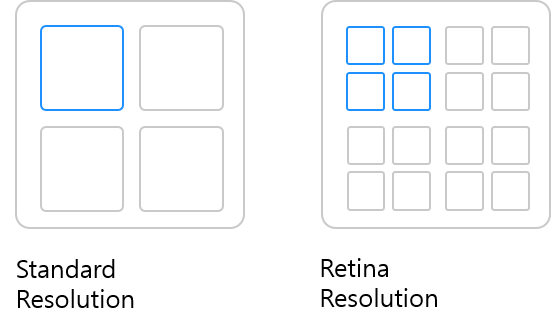

이미지 태그에는 항상 아쉬움이 남았다.
기기 크기마다 다른 이미지를 출력하고 싶으면 JS로 조작하거나 div 태그에 CSS의 background-image 속성을 사용해야 했다.
이러면 이미지 수정을 할 때마다 다른 파일들을 뒤적뒤적 하게된다. html파일에 딱 묶어놓고 쓰면 한눈에 확인하기 좋을텐데!
정말 우연한 기회로 클론 코딩을 하다가 picture 태그를 알게 되었다. 찾았어 나의 데스티니. 반응형 이미지를 구현하는 픽쳐 태그와 이미지 최적화 방법을 알아보자.
🔥
이미지 구현 문제
이미지 파일마다 정해진 크기가 있다. 그래서 가로가 500px인 이미지를 1000px만큼 늘려서 넣으면 이미지 파일은 네모네모 모자이크 빔을 냅다 맞아버린다. 마인크래프트처럼 변한다. 악 진짜 싫어.
참고로 이 현상을 'pixelated'라고 표현한다.
특히, 다음에 오는 세 가지 주의요소는 반응형 이미지 구현을 더더더더 어렵게 만든다.
기기의 크기
이미지의 크기
기기의 screen resolution
실제 해결할 문제는 두 가지다.
고유한 크기를 유지하면서 이미지를 모바일 레이아웃에 맞게 만들어야 한다.
사용자가 불필요하게 큰 이미지 파일을 다운로드 하지 않도록 해야한다.
👉
준비 환경
반응형 이미지를 구현할 파일을 준비한다.
파일명은 정체성과 일관성을 띄게 지어주면 좋다.
예를 들면 illustration-big.png와 illustration-small.png.
💪
고유한 크기 유지(레티나 스크린의 문제)
레티나 스크린은 일반 스크린보다 인치당 두 배 더 많은 픽셀이 있는 스크린을 의미한다.
여기서 문제점은, 인치당 들어가는 픽셀이 많다는 것이다. 일반 스크린에는 1개의 픽셀이 들어가지만, 동일 면적에 레티나 스크린은 4개의 픽셀이 들어간다.

일반 스크린에 비해 상하좌우가 50% 작아진 크기로 이미지가 화면에 구현된다. 그러므로 정확한 확인을 위해 파일의 가로세로 크기를 두배로 늘려주는 작업이 필요하다.
더 환장하는 건 아이폰 6 플러스는 3배 더 오밀조밀 하지롱.
svg 이미지를 사용하면 문제는 해결된다. 하지만 파이어폭스 외의 브라우저는 크기 자동 조정 기능이 없다. CSS파일에 width와 max-width속성을 추가해야 한다.
💁
고해상도 이미지 최적화(srcset 속성)
고해상도 이미지는 크기가 커서 페이지를 느리게 만든다. 요소에 srcset속성을 추가하면 레티나 장치에만 고해상도 이미지를 표시할 수 있다.
구분을 위해 이미지 경로 옆에 descriptors를 추가한다. 표준 해상도 이미지 경로에는 '1x' 레티나 고화질 이미지 경로에는 '2x'를 표시한다.